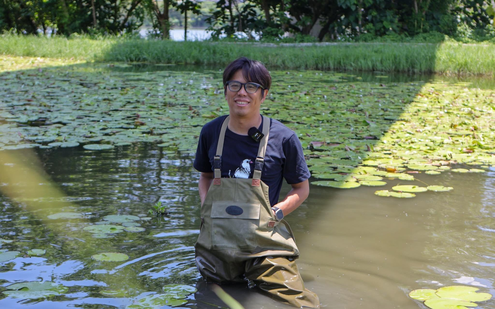

2013 · 創辦人 Founder
貳拾號公民會所
No. 20 Civic House
透過公共事務的討論、參與及行動，回應公民社會。
A civic space that responds to civil society through public discussion, participation and action.
跨界・分享・行動
Connect. Share. Act.
國立臺灣師範大學永續管理與環境教育研究所博士，關注人文田野、生態調查、社區營造、環境教育與策展。
PhD in Sustainability Management and Environmental Education, National Taiwan Normal University (2024), focusing on cultural fieldwork, ecological survey, community building, environmental education and curation.

01 · ABOUT
About Szu-Ju
國立臺灣師範大學永續管理與環境教育研究所博士、國立臺北大學自然資源與環境管理研究所碩士、淡江大學水資源及環境工程學系學士。曾任職於生態實驗室與非政府組織，長期關注人文與生態永續議題，專注在跨專業的實驗中找尋解決之道。2013 年創立貳拾號公民會所，2014 年創立景澤創意，之後陸續創辦三時生活實驗室、大浪據文化、川流之島流域學校。
Szu-Ju Wu earned a PhD (2024) from the Graduate Institute of Sustainability Management and Environmental Education at National Taiwan Normal University, a master’s degree in Natural Resources and Environmental Management from National Taipei University, and a bachelor’s in Water Resources and Environmental Engineering from Tamkang University. After working in an ecology lab and with NGOs, Szu-Ju opened No. 20 Civic House in 2013 and founded Vision Union in 2014, then went on to start San Shi Living Lab, Big Swell Data and the River Island Watershed School.
02 · VENTURES
Organisations I founded and lead
從公司、媒體、商店到學校，每個事業都是一種讓人重新與環境連結的方法。
A studio, a media platform, a shop and a school — each a different way to reconnect people with their environment.
2013 · 創辦人 Founder
透過公共事務的討論、參與及行動，回應公民社會。
A civic space that responds to civil society through public discussion, participation and action.
2014 · 執行長 CEO
跨領域團隊，承接環境管理、環境教育、社區營造、空間與視覺設計及媒體行銷。
A cross-disciplinary studio for environmental management, education, community building, spatial and visual design, and media.
visionunion.com.tw2017 · 創辦人 Founder
位於台北錦州街的無包裝商店，不定期辦理永續相關活動。
A package-free shop on Jinzhou Street, Taipei, hosting sustainability events from time to time.
store.sanshilivinglab.com.tw2020 · 創辦 Founder
環境與人文媒體平台，以文章、影音、課程與市集記錄並推動永續議題。
A media platform on environment and culture — stories, video, courses and a market.
bigswell.com.tw2020 · 創辦人 Founder
以公民科學、人文田野與流域生態調查，培養關心河川的公民。
Citizen science, field study and watershed surveys for people who care about rivers.
doriver.com.tw景澤創意開發 By Vision Union
可辨識 38 種蛙類鳴聲的 App，並推動全民蛙鳴調查。
An app that identifies the calls of 38 frog species and powers a public frog-call survey.
identifrog.com.tw創辦・負責人 FOUNDER
結合人文洞察與科學監測，轉譯複雜系統。以田野調查與長期生態監測為基礎，為企業與公部門提供社會人文洞察、環境生態科學、公民科學與數據轉化的永續解方。
Pairing human insight with scientific monitoring to make complex systems legible — field research and long-term ecological data turned into sustainability solutions for companies and the public sector.
社子島周邊濕地鳥類調查
Shezi Island wetlands · since 2018
三峽河鳥類公民調查
Sanxia River citizen survey · since 2021
廣興濕地鳥類調查
Guangxing Wetland · since 2025
工作方法：田野 → 監測 → 分析 → 轉譯 → 行動｜Method: field · monitoring · analysis · translation · action。數據統計至 2026 年 11 月（廣興濕地至 2025 年 12 月），來源：大浪據文化官網。
03 · SELECTED WORK
Selected projects
從歷年委託與標案中精選。
Selected from commissioned projects.
2019– · 場館營運 VENUE OPERATION
北門旁的紅磚倉庫，1913 年由三井物產興建，至今仍留有三井菱形商標；2016 年整棟向東遷移 51 公尺保存，2018 年以「記憶倉庫」重新開放。景澤受臺北市文化局委託營運，以淡水河流域與城市歷史策畫展覽與教育推廣，一樓設川流之島書店。
A red-brick warehouse built by Mitsui in 1913 beside Beimen, moved 51 m east in 2016 and reopened in 2018. Vision Union runs it for Taipei’s Department of Cultural Affairs, with exhibitions on the Tamsui River and the city and the River Island bookshop downstairs.
2024 營運成果 2024 report2026 · KEEP WALKING 夢想資助計畫得主
AI 蛙鳴聲紋辨識 App，讓一般民眾也能參與生態監測，經三位蛙類專家複核，累積有效紀錄已超過 8,000 筆。2026 年獲第 22 屆 KEEP WALKING 夢想資助計畫支持。
An AI frog-call identification app that lets anyone take part in ecological monitoring; with every recording checked by three frog experts, it has gathered more than 8,000 valid records. Backed by the 22nd KEEP WALKING Dream Fund in 2026.
identifrog.com.tw2022 · 策展人 CURATOR
美術館年度主軸「生存信仰」的首檔展覽。邀請王菁華、范欽慧、李蕢至、劉辰岫、林安琪 Ciwas Tahos，在虛實交錯的時代，重新思考人如何感知新竹的土地與生活環境。
The opening show of the gallery’s 2022 programme: five artists on how we sense land and environment when real and virtual blur.
線上展覽 Online exhibition場域輔導 SITE CERTIFICATION
從場域規劃、課程方案到志工培訓，協助場域通過環境教育設施場所認證與展延：八德埤塘自然生態公園、龜山苗圃綠環境生態園區、劍潭山環境教育館、貴子坑水土保持園區。
Planning, programmes and volunteer training that took four sites in Taoyuan and Taipei through national environmental-education certification.
2018 · 臺北市都市發展局委託
以社區參與規劃人行道。調查 500 公尺街道上的 203 棵路樹，在老樹竄根與行人安全之間，和居民一起訂出街道規劃原則。
Participatory sidewalk planning: surveying 203 street trees along 500 m and setting principles with residents that balance old trees and pedestrian safety.
規劃經驗分享 Read the story2016 · 社區營造 COMMUNITY DESIGN
臺北市政府都市更新處委託。為國定古蹟北門周邊街區研擬招牌設計原則，與店家進行廣告物示範操作，2017 年在撫臺街洋樓辦「北門街招資訊展」，成果出版為《北門街招成果彙編》。
Sign design principles for the streets around the North Gate, a national monument, tested with local shops through demonstration projects.
成果彙編 Project report04 · PUBLICATIONS
Research on wetlands, citizen science and environmental education
4 篇期刊論文、3 本專書、36 篇研討會發表。
4 journal articles, 3 books and 36 conference presentations.
2026.09 · CoDesign, 1–27
Chen, Y.-F., Wu, S.-J., & Su, T.-Y.
與「蛙抵家」蛙鳴辨識計畫相關｜Grounded in the Identifrog frog-call project
doi:10.1080/15710882.2026.27261662024.06 · 農業工程學報 70(2)
How visitor feeding affects water quality in a flow-through farm pond, Bade Pond Ecological Park, Taoyuan
吳思儒、朱淳懿、謝智元、林柏安、王之佑、方偉達
doi:10.29974/JTAE.202406_70(2).00042023.12 · 農業工程學報 69(4)
Reed management in a constructed tidal wetland and its effects on habitat
吳思儒、黃耀陞、黃國文、陳建志、方偉達
doi:10.29974/JTAE.202312_69(4).00032023.11 · Land 12(11): 2036
Wu, S.-J., Ng, E., Lin, K.-B., Cheng, Y.-H., LePage, B. A., & Fang, W.-T.
doi:10.3390/land121120362016 · 景澤創意執行 BY VISION UNION
Beimen Street Signs: Project Report
北門周邊社區營造：廣告物示範操作的完整紀錄，從店家溝通、招牌設計到街區景觀。
2021.05 · 總編輯 EDITOR-IN-CHIEF
Living with the Wild: An Illustrated Guide to Eco-friendly Engineering in Taiwan’s National Forests
收錄全臺 16 個國有林地治理工程案例，以文字、照片與插畫說明工程如何減少對動物與棲地的衝擊。
Sixteen cases from across Taiwan, explained in text, photos and illustrations, showing how forest engineering can reduce its impact on wildlife and habitats.
2022.01 · 總編輯 EDITOR-IN-CHIEF
Community Forestry Up Close: A Guide to Ecological Surveys
寫給執行社區林業計畫的社區與部落，用循序漸進的步驟教居民盤點身邊的動植物資源，把生態調查變成公民科學行動。
A step-by-step guide for communities in Taiwan’s community forestry programme, helping residents survey local plants and animals and turn that work into citizen science.
Enhancing the management of estuarine mangrove blue carbon through high-frequency IoT monitoring
Wu, S.-J., Lin, H.-J., Wang, H.-Y., & Hung, S.-H.
7th Mangrove Macrobenthos and Management Conference (MMM7), Ishigaki, Japan · Flash talk & poster
廣興濕地公園周邊鳥類相季節關係初探
李明晃、王毓婷、吳思儒
第十七屆台灣濕地生態系研討會・文化大學・海報
反國光石化後之彰化海岸國際濕地劃設與推動
施月英、王毓婷、吳思儒
第十七屆台灣濕地生態系研討會・文化大學・海報
融合傳統知識與自然解方之埤塘濕地保育成效研究：以社區鬼稻復育與企業 ESG 行動為例
黃彥霖、謝智元、吳思儒
第十七屆台灣濕地生態系研討會・文化大學・海報
基於 IoT 即時水質監測之紅樹林藍碳動態管理策略研究
吳思儒、林幸助、王洵瀅
第十七屆台灣濕地生態系研討會・文化大學・海報
橋樑改建工程對溪流鳥類之衝擊影響：以三峽河長福橋為例
吳思儒、何一先、鄧伊辰、王洵瀅
第十七屆台灣濕地生態系研討會・文化大學・海報
臺北記憶倉庫觀眾知覺價值、滿意度與忠誠度關係之研究
吳思儒、余家萱、賴靜怡
第35屆環境教育學術暨實務交流國際研討會・國立臺灣科學教育館・口頭
紅樹林林分結構與紅樹蜆族群分布之關聯初探：以挖子尾自然保留區為例
吳思儒、朱淳懿、王洵瀅、林柏安、謝智元、鄧伊辰
第十六屆台灣濕地生態系研討會・國立嘉義大學・海報
Exploring the Effectiveness of Collaborative Environmental Art in Community Wetland Environmental Education: A Case Study of the “New Taipei Wetland Art Festival”
Szu-Ju Wu, Yi-Chen Chien
8th ISEPST, Kyoto, Japan
臺北市華江濕地地形變化對於底棲生物之影響
吳思儒、陳建志、林柏安、阮韞澈、郭子嘉
第十五屆台灣濕地生態系研討會・國立臺灣師範大學・海報
挖子尾濕地生態系服務地圖化應用初探
吳思儒、王毓婷、方偉達
第十五屆台灣濕地生態系研討會・國立臺灣師範大學・海報
不同農法水梯田之蛙類組成變化初探
吳思儒、陳建志、林柏安
第十五屆台灣濕地生態系研討會・國立臺灣師範大學・海報
社子島濕地營造與鳥類相的變化
吳思儒、何一先、林柏安、王毓婷、蕭任珽
第十五屆台灣濕地生態系研討會・國立臺灣師範大學・海報
生態系服務美學之空間分佈初探：以廣興濕地為例
吳思儒、王毓婷、王辰云
台灣地理資訊學會年會暨學術研討會・成功大學・口頭
臺北華江濕地內河道底棲無脊椎動物數量與水質關係初探
吳思儒、陳建志、陳柏曄、林柏安、阮韞澈、郭子嘉
第十四屆台灣濕地生態系研討會・成功大學・海報
遊客餵食行為對於埤塘水質影響研究
吳思儒、朱淳懿、謝智元、林柏安、王之佑、方偉達
第十四屆台灣濕地生態系研討會・成功大學・海報
挖子尾溼地周邊居民生態系服務認知初探
阮韞澈、吳思儒
第十四屆台灣濕地生態系研討會・成功大學・海報
三峽河流域家燕與赤腰燕燕巢偏好的地理分析
何一先、吳思儒、王毓婷
第十四屆台灣濕地生態系研討會・成功大學・海報
活動滿意度、地方感依附對於負責任環境行為影響：以新北市濕地割稻體驗活動為例
吳思儒、朱淳懿、簡翊真、裘有勳、方偉達
第32屆環境教育學術暨實務交流國際研討會・清華大學南大校區・口頭
以使用者經驗設計開發公民科學行動應用程式：以「蛙抵家」為例
陳彥甫、吳思儒、蘇泰元
2022 台灣感性學會暨台灣數位媒體設計學會國際研討會・台東大學・口頭
公民科學 App 蛙抵家的開發工作：深度學習應用於蛙鳴辨識
蘇泰元、吳思儒、陳彥甫、游承翰
第32屆環境教育學術暨實務交流國際研討會・清華大學南大校區・海報
應用 AR 技術於河川人文與生態教育：以新店溪流域為例
吳思儒、陳彥甫、方偉達
2021 國際濕地大會・中央研究院・口頭
公私協力的流域守護行動初探：以台灣三峽河段為例
吳思儒、張禾玫、陳柏宏、阮韞澈、方偉達
第十二屆台灣濕地生態系研討會・國立臺灣師範大學・口頭
峨眉湖環湖步道及周邊淺山地區鳥類生物多樣性及群聚關係比較運用於生態旅遊建議
陳柏宏、何一先、陳建志、黃柏崴、吳思儒
第十二屆台灣濕地生態系研討會・國立臺灣師範大學・海報
濕地空間景觀偏好與負責任環境行為關係兼論地方依附中介效果：以關渡自然公園為例
吳思儒、方偉達、鄭以芯、林楷博
2020 環境教育研討會・海洋科技博物館・口頭
流域復育與地方創生
吳思儒、張震宇
第十一屆台灣濕地生態系研討會・文化大學・海報
大漢新店國家重要濕地臺灣蜆分佈初探
吳思儒、郭子嘉、陳建志
第十一屆台灣濕地生態系研討會・文化大學・海報
Wetland Management: The Impact of Reed Height on Migratory Birds
Szu-Ju Wu, Wei-Ta Fang, Chia-Chien Li, Chien-Chin Chen, Szu-Kuang Wu
European Ornithologists’ Union Conference 2019, Cluj, Romania
濕地藝術環境行動對志工環境教育之成效評估：以新北濕地藝術季為例
吳思儒、鄭以芯、方偉達
2018 國際濕地大會・富邦國際會議中心・海報
人工濕地管理與環境藝術初探：以蘆葦為創作材料
吳思儒
第八屆台灣濕地生態系研討會暨第二屆國家公園濕地研究成果發表會・惠蓀林場・口頭
蘆葦生長管理整合性濕地管理：以社子島人工濕地蘆葦生長管理為例
吳思儒、蔡易廷、陳建志
第八屆台灣濕地生態系研討會暨第二屆國家公園濕地研究成果發表會・惠蓀林場・口頭
行政院環保署北區環境教育區域中心之環境藝術活動對於參與民眾環境素養提升之成效
方偉達、吳思儒、楊雅雯、李佳倩、陳章波、謝蕙蓮
2017 環境教育學術暨實務交流國際研討會
科學與藝術的對話：建構流域學習之典範轉移
吳思儒、謝蕙蓮、陳章波、方偉達
2016 國際濕地大會・松山文創園區・口頭
濕地青少年教育：以華江雁鴨自然公園為例
吳思儒、謝蕙蓮、陳章波
中國第一屆濕地論壇・泉州師範大學・口頭
社子島環境教育初探
吳思儒、方偉達、黃俊翰
2016 兩岸濕地聯合研討會・嘉義大學・口頭
濕地體驗教育對中學生保育態度的影響
吳思儒、謝蕙蓮、陳章波、黃馨蕙
第四屆海峽兩岸人工濕地暨第三屆台灣濕地生態系聯合研討會
05 · WRITING
Columns on rivers, wetlands and city life
06 · CONTACT
Let’s work together
歡迎洽談講座、策展、環境教育課程與社會設計合作。
Talks, curation, environmental education programmes and social design collaborations are all welcome.